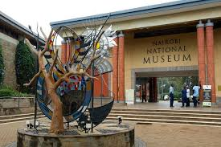
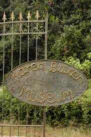
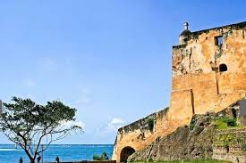
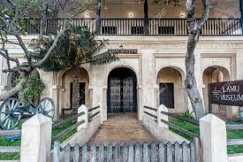
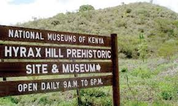
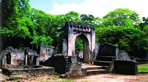

Discover Kenya's rich cultural heritage through world-class museums showcasing art, history, and natural wonders

Kenya's premier museum featuring prehistoric fossils, ethnographic collections, and contemporary art. Home to the famous Turkana Boy fossil.

Historic farmhouse of the famous Danish author who wrote "Out of Africa". Set in beautiful gardens with period furnishings.

UNESCO World Heritage site built by Portuguese in 1593. Features impressive architecture and rich maritime history exhibits.

Showcases Swahili culture and coastal history. Located in the historic Lamu Old Town, another UNESCO World Heritage site.

Archaeological site with prehistoric settlements, Neolithic artifacts, and stunning views of Lake Nakuru.

Ancient Swahili town ruins dating back to the 12th century. Features palace, mosques, and houses preserved in forest setting.
Check photography rules before visiting - some museums have restrictions
Popular museums may require advance booking, especially during peak season
Enhance your experience with expert guided tours for deeper insights
Plan 2-3 hours minimum for major museums to fully appreciate exhibits